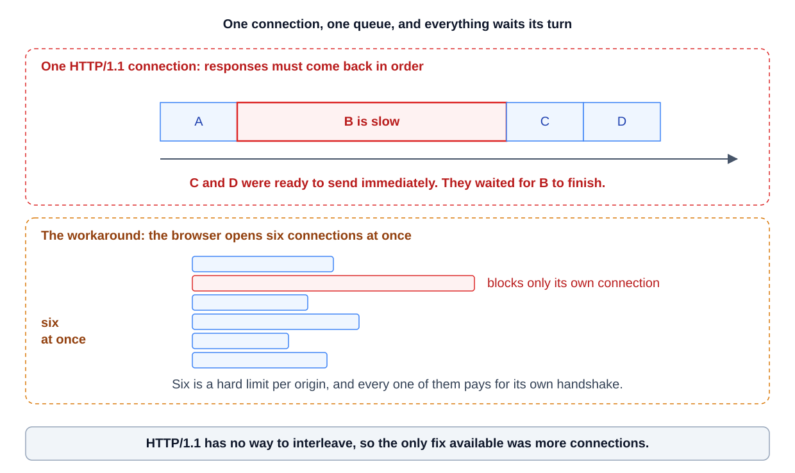
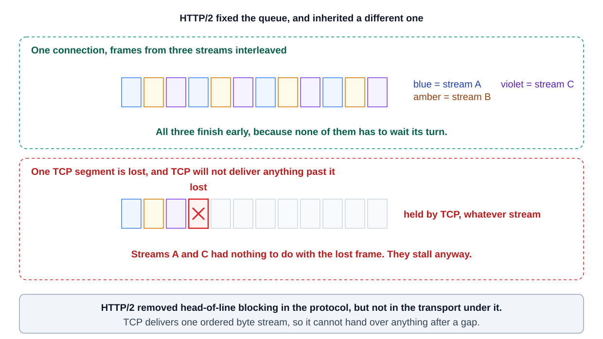
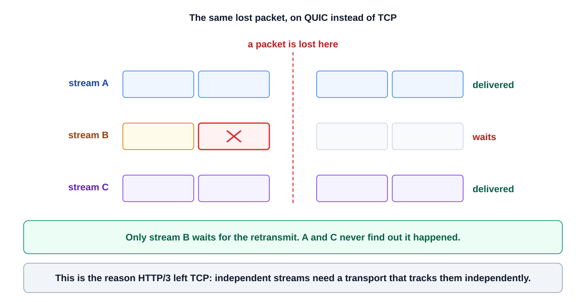

0% completed
What Changed From HTTP/1.1 To HTTP/2 To HTTP/3, And What Are Head‑of‑line Blocking And Multiplexing?
On This Page
Evolution of HTTP: From HTTP/1.1 to HTTP/2 to HTTP/3
HTTP/1.1 (1997)
HTTP/2 (2015)
HTTP/3 (2022)
What is Head-of-Line Blocking?
Why it Matters
What is Multiplexing in HTTP?
HTTP/3 and QUIC
HTTP/1.1 (Sequential Requests and Limitations)
HTTP/2 (Multiplexing and Performance Improvements)
HTTP/3 (QUIC and Eliminating Head-of-Line Blocking)
Why HTTP/3 Matters
Example Scenario and Practical Impact
HTTP/1.1, HTTP/2, and HTTP/3 are successive versions of the web’s HTTP protocol, where HTTP/2 introduced multiplexing (sending multiple requests in parallel over one connection) to overcome HTTP/1.1’s head-of-line blocking (one slow request stalling others), and HTTP/3 builds on this by using QUIC (a UDP-based transport) to eliminate head-of-line blocking at the network level for faster, more reliable web communication.
Evolution of HTTP: From HTTP/1.1 to HTTP/2 to HTTP/3
Over the years, HTTP has evolved to make web pages load faster and more efficiently.
Here’s a quick overview of how each version improved over its predecessor:
HTTP/1.1 (1997)
The long-standing HTTP version that uses TCP for transport.
Only one request/response can be in flight per connection, leading to sequential processing.
Browsers often opened multiple TCP connections (commonly ~6 per domain) to fetch resources in parallel.
Features like persistent connections and pipelining were introduced, but pipelining suffered from head-of-line blocking, meaning a single slow response could block others behind it.
This version is text-based and has verbose headers, which adds overhead.
HTTP/2 (2015)
A major upgrade focused on performance. HTTP/2 introduced multiplexing; the ability to send multiple requests and responses concurrently over a single TCP connection.
It switched to a binary framing layer (instead of textual format) and added features like header compression (HPACK) to reduce overhead, server push (servers sending resources without a separate request), and stream prioritization.
By multiplexing streams, HTTP/2 avoids HTTP/1.1’s application-layer head-of-line blocking (one blocked response no longer stalls the others).
However, because it still uses TCP, packet loss can cause TCP-level head-of-line blocking (explained below).
HTTP/3 (2022)
The latest version that changes the transport layer: HTTP/3 runs over QUIC, a new protocol built on UDP instead of TCP.
QUIC is designed to overcome TCP’s limitations by providing stream-based multiplexing at the transport layer.
In HTTP/3, each stream is independent. If a packet is lost, it only affects that particular stream, and other streams continue unhindered. This means HTTP/3 eliminates head-of-line blocking at the network layer, solving the remaining issue from HTTP/2.
QUIC also allows faster handshakes (often 0-RTT setup for repeat connections) and mandates built-in encryption (TLS 1.3) by default, making connections both faster to establish and more secure.
In essence, HTTP has evolved from a one-request-at-a-time model in HTTP/1.1 to a fully parallel, multiplexed model in HTTP/2, and finally to a UDP-based multiplexed model in HTTP/3 that removes the last performance bottlenecks.
Next, let’s break down the concepts of head-of-line blocking and multiplexing, which are central to these improvements.
What is Head-of-Line Blocking?
Head-of-line (HoL) blocking refers to a situation where the first item in a queue prevents those behind it from making progress.
In networking, this means if one request or packet is delayed, everything behind it waits, even if subsequent items could be processed immediately.
-
In HTTP/1.1 (Application-Layer HoL Blocking): Because only one request could be handled at a time on a connection, responses had to come back in the same order as requests. If an early request was slow (for example, waiting on a slow database query or a large file), it blocked the responses for any later requests over that connection. This is like having a single checkout line at a store: if the customer at the front has a problem, everyone behind them waits. Browsers tried to mitigate this by opening 6+ parallel connections so multiple requests could proceed concurrently, but each connection still had the one-at-a-time rule internally.
-
HoL Blocking in TCP: Even after HTTP/2 introduced multiplexing (multiple streams on one connection), the underlying TCP protocol can cause head-of-line blocking. TCP delivers data in strict order. If packet #2 is lost, the TCP stack will pause and wait until that packet is retransmitted before delivering any subsequent data to the application. In an HTTP/2 scenario, that means even if streams are independent at the HTTP level, a lost TCP packet holding part of one stream’s data will stall all streams on that connection until recovery. This is a transport-layer head-of-line blocking issue.
Why it Matters
Head-of-line blocking leads to higher latency and inefficient use of the network. In HTTP/1.1, it meant web pages with many resources (images, scripts, CSS) loaded slower because resources could not all load at once.
In HTTP/2, HoL blocking is greatly reduced at the HTTP layer, but on unreliable networks (e.g. mobile) a single packet loss can still degrade performance due to TCP’s in-order requirement.
This is exactly what HTTP/3 tackles by changing the transport to QUIC.
What is Multiplexing in HTTP?
Multiplexing is the ability to send multiple signals or data streams over a single channel at the same time.
In the context of HTTP, multiplexing allows multiple requests and responses to be transmitted in parallel over one connection, instead of doing them one by one.
Under HTTP/1.1, if a webpage required 10 resources, the browser had to use either multiple connections or pipeline requests sequentially, essentially downloading one thing at a time per connection.
This was inefficient, akin to sending chapters of a book one after another via mail and waiting for receipt of each before sending the next.
HTTP/2’s multiplexing changed that. It introduced a binary framing layer that breaks each HTTP message into small frames and tags them with stream identifiers.
This means a browser can fire off many requests at once on the same TCP connection and get responses back out-of-order as they arrive.
The server can interleave chunks of different responses on the wire, and the client reassembles them by stream ID. In our book analogy, HTTP/2 is like sending all chapters in parallel, each in its own envelope, and numbering them so the recipient can put them in order.
Even if one chapter (envelope) is delayed, the others still arrive and can be read. Thereby avoiding head-of-line blocking at the HTTP level.
Key points about HTTP/2 multiplexing:
-
Multiple parallel streams: One TCP connection can handle many requests simultaneously. For example, your browser could request all 10 images of a page at once and receive data for all of them interleaved on the same connection.
-
No order blocking (at HTTP layer): Responses can arrive as soon as they’re ready. A slower response no longer holds up faster ones behind it The browser just assembles whatever data comes in by stream. This largely solves HTTP/1.1’s head-of-line blocking issue where one slow item would block the rest.
-
Efficiency: Fewer open TCP connections means less overhead (no need for many handshakes or duplicate TCP/IP packets). It also enables features like request prioritization, so important resources (like initial HTML or CSS) can be marked to arrive first for better user experience.
HTTP/3 and QUIC
HTTP/3 retains the multiplexing concept (multiple streams) but implements it at the transport layer via QUIC.
Each QUIC stream is independent, so multiplexing in HTTP/3 means not only can multiple requests be sent in parallel, but even a low-level packet loss on one stream does not block others, something HTTP/2 over TCP couldn’t achieve.
Multiplexing in HTTP/3 thus operates without the risk of TCP-induced blocking, making web transfers more robust especially on unreliable networks.
HTTP/1.1 (Sequential Requests and Limitations)
HTTP/1.1 was a game-changer in the late 90s, introducing persistent connections and pipelining, but it has inherent performance limitations for today’s web:
-
One thing at a time: Each HTTP/1.1 connection handled one request at a time (no true parallelism). A new request had to wait until the previous one’s response was fully received. Browsers could open multiple connections to work around this (typically 6 per host), but each connection still queued its requests sequentially.
-
Head-of-line blocking: If a request at the front was slow, it delayed all others on that connection. HTTP/1.1 allowed pipelining (sending several requests back-to-back), but responses still came back in order. So, a slow response at the front of the pipeline blocked the rest, often nullifying pipelining’s benefit. Many servers and browsers ended up disabling or not fully supporting pipelining due to these issues.
-
Uncompressed, verbose headers: HTTP/1.1 uses text-based headers sent on every request. For modern websites that make dozens of requests, these headers (including cookies) add significant overhead. There’s no built-in compression in HTTP/1.1, meaning larger payloads and wasted bandwidth.

In summary, HTTP/1.1 can be a bottleneck for pages with many resources.
Developers used tricks like image spriting, concatenating files, and domain sharding (to bypass connection limits) to mitigate these limitations before HTTP/2.
HTTP/2 (Multiplexing and Performance Improvements)
HTTP/2 was designed to address HTTP/1.1’s inefficiencies while remaining backward-compatible with the existing web (it’s an extension, not a ground-up rewrite).
Key changes in HTTP/2 include:
-
Multiplexed streams over one connection: As discussed, this is the flagship feature. Multiple requests & responses can traverse a single TCP connection at the same time without interfering with each other. This dramatically improves page load times for resource-heavy pages, as the browser no longer waits sequentially for each file. Head-of-line blocking at the HTTP level is effectively gone; one blocked response doesn’t stall others.
-
Binary protocol: HTTP/2 converts the human-readable text format of HTTP/1.1 into a compact binary format. This makes parsing more efficient and reduces ambiguities. Data is framed into binary chunks, which helps with multiplexing (frames from different streams can be interleaved).
-
Header compression (HPACK): Instead of repeatedly sending large header strings (like cookies and user agents) with each request, HTTP/2 compresses headers and remembers previous headers to avoid redundancy. This cuts down bandwidth usage, especially with many small requests.
-
Server Push: HTTP/2 servers can push resources to the client proactively. For example, when a browser requests an HTML page, the server might push the associated CSS and JS files before the browser even asks, saving round-trip time. This feature needs careful use (to avoid sending unnecessary data), but can reduce latency for crucial assets.
-
Stream prioritization: The client can indicate which streams are more important. For instance, an HTML document or above-the-fold image can be given higher priority over other assets. The server can use these hints to decide the sending order if bandwidth is constrained. (In practice, browser heuristics and HTTP/2’s implementation vary, but the feature exists.)
The result: HTTP/2 yields a much faster and smoother loading of websites, especially those with many assets, on good network connections.
A single connection per origin means less memory and CPU spent on managing sockets.
As an example, news sites or social media platforms serving lots of images and scripts benefit greatly from HTTP/2’s multiplexing and header compression.
However, one caveat remained: because HTTP/2 is layered on TCP, if the network drops a packet, all streams on that connection pause until recovery (TCP’s head-of-line blocking).
On low-latency, reliable networks this isn’t usually noticeable, but on high-latency or lossy links (say, mobile data or WiFi with interference), this can negate some benefits of multiplexing. Enter HTTP/3.

HTTP/3 (QUIC and Eliminating Head-of-Line Blocking)
HTTP/3 is essentially HTTP/2 re-engineered to run on QUIC, a transport protocol that operates over UDP.
QUIC was developed by Google and adopted by the IETF to solve the transport-layer issues that HTTP/2 could not solve due to TCP reliance.
Here’s what changed:
-
No TCP; uses QUIC (UDP): QUIC is a UDP-based protocol that provides reliability, ordering, and encryption at the transport layer, but crucially, it does not enforce in-order delivery across the whole connection. Instead, QUIC has the concept of multiple independent streams within a single connection. If a packet in one stream is lost, only that stream waits for retransmission; other streams continue delivering data unaffected. This means no head-of-line blocking between streams in case of packet loss. HTTP/3 maps HTTP messages to QUIC streams, so it inherits this non-blocking behavior. In practice, a dropped packet affecting an image download won’t stall the HTML and CSS streams, for example.
-
Built-in encryption and faster handshakes: HTTP/3 (via QUIC) uses TLS 1.3 encryption by default for all connections and combines the transport and cryptographic handshake into one. QUIC was designed to establish connections with zero or one round-trip (1-RTT for a fresh connection, 0-RTT resumption for repeat connections). This significantly reduces connection setup time, important for HTTPS, where TCP+TLS in older versions took multiple round trips. In HTTP/3, a client can often start sending data within a single round trip or immediately if resuming a session. This improvement is especially beneficial for mobile clients and real-time applications.
-
Other QUIC benefits: QUIC supports connection migration. If you switch from Wi-Fi to cellular, the connection can continue (identified by a connection ID) without restarting, which is great for mobile usage. It also has improved congestion control and loss recovery strategies, often resulting in better throughput on variable networks.
-
Same HTTP semantics: Importantly, HTTP/3 doesn’t change the fundamentals of HTTP’s semantics relative to HTTP/2. It still uses the concept of streams, header compression (using a QPACK scheme similar to HPACK), server push (though this is being deprecated or rethought), etc. The big change is the transport protocol. Think of HTTP/3 as “HTTP/2 on QUIC.”

Why HTTP/3 Matters
By removing the last HoL blocking issue, HTTP/3 can outperform HTTP/2 in adverse network conditions.
For example, on a 2% packet loss network, HTTP/3 can significantly cut page load times compared to HTTP/2.
Users on mobile networks or long-distance connections often see more consistent performance with HTTP/3 (fewer annoying pauses due to lost packets).
Moreover, the faster handshake means HTTPS latency is reduced, every connection starts up faster.
Many CDNs and large websites have started enabling HTTP/3 to give users a speed boost, especially where networks are less reliable.
That said, HTTP/3 requires support from both client and server, and not all networks or corporate firewalls allow UDP traffic.
HTTP/3 is increasingly supported in modern browsers and servers, but HTTP/2 is still prevalent as a fallback.
Over time, we expect HTTP/3 adoption to grow as infrastructure catches up and the benefits become evident.
Example Scenario and Practical Impact
Consider a modern web page that requires loading 100 small resources (images, scripts, etc):
-
With HTTP/1.1: The browser might open ~6 parallel TCP connections. Each connection will fetch resources one by one. If any one request stalls, that connection’s queue backs up. The overhead of managing many connections and sending duplicate headers hurts performance. The user might notice slower loading, with resources appearing in batches.
-
With HTTP/2: The browser uses one connection per server. All 100 requests can be sent almost at once thanks to multiplexing. The server can intermix the responses so the browser starts receiving some data from each resource quickly. The page feels faster and more interactive, as images and content load concurrently. However, if the network drops a packet, there might be a brief pause affecting all streams on that connection until the packet is resent (if the loss is noticeable).
-
With HTTP/3: The experience is similar to HTTP/2 in good conditions (multiple responses arriving in parallel). But if a packet is lost, only the stream with that packet pauses, others continue uninterrupted. This makes the loading smoother on flaky connections. Additionally, the initial connection setup is faster, so even the very first byte of the first response arrives sooner. Overall, the page loads with less latency and more resilience to network hiccups.
Developers and interview candidates should understand these differences because they impact how we optimize web performance.
Concepts like head-of-line blocking often come up in system design and networking interviews, e.g., how TCP can limit throughput for HTTP/2, or why QUIC was introduced.
Multiplexing, likewise, is fundamental to modern HTTP; knowing that HTTP/2 can send parallel requests over one connection (unlike HTTP/1.1) is key to designing efficient web services.
0 Comments
No comments yet. Be the first to start the discussion!
Reading Progress
0%
On This Page
Evolution of HTTP: From HTTP/1.1 to HTTP/2 to HTTP/3
HTTP/1.1 (1997)
HTTP/2 (2015)
HTTP/3 (2022)
What is Head-of-Line Blocking?
Why it Matters
What is Multiplexing in HTTP?
HTTP/3 and QUIC
HTTP/1.1 (Sequential Requests and Limitations)
HTTP/2 (Multiplexing and Performance Improvements)
HTTP/3 (QUIC and Eliminating Head-of-Line Blocking)
Why HTTP/3 Matters
Example Scenario and Practical Impact